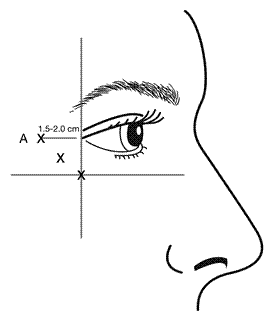
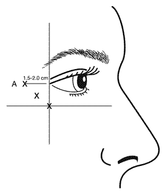
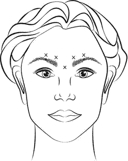
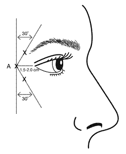
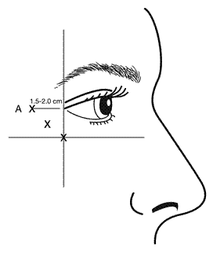

RÉSUMÉ DES CARACTÉRISTIQUES DU PRODUIT
ANSM - Mis à jour le : 13/12/2013
VISTABEL 4 UNITES ALLERGAN / 0,1 ml, poudre pour solution injectable
2. COMPOSITION QUALITATIVE ET QUANTITATIVE
Toxine botulinique de type A* ....................................... 4 unités ALLERGAN par 0,1ml de solution reconstituée
*(de Clostridium botulinum)
Les unités Allergan ne sont pas interchangeables avec les autres préparations de toxine botulinique
Flacon de 50 Unités.
Pour la liste complète des excipients, voir rubrique 6.1.
Poudre pour solution injectable.
Poudre blanche.
4.1. Indications thérapeutiques
- des rides verticales intersourcilières modérées à sévères observées lors du froncement des sourcils (rides glabellaires),
- des rides canthales latérales modérées à sévères (pattes d’oie) observées lors d’un sourire forcé,
- des rides canthales latérales modérées à sévères observées lors d’un sourire forcé quand traitées simultanément avec des rides glabellaires modérées à sévères observées lors du froncement des sourcils.
4.2. Posologie et mode d'administration
Veuillez vous référer aux recommandations spécifiques pour chaque indication ci-dessous.
Compte tenu que les unités de toxine botulinique sont différentes selon les produits, les doses de toxine botulinique ne sont pas interchangeables d’un produit à l’autre.
Patients âgés
Les données cliniques de phase 3 avec VISTABEL sont limitées chez les patients âgés de plus de 65 ans (voir rubrique 5.1).
Population pédiatrique
Chez les sujets de moins de 18 ans, la sécurité et l’efficacité de VISTABEL dans le traitement des rides glabellaires modérées à sévères observées lors du froncement des sourcils ou des rides canthales latérales modérées à sévères observées lors d’un sourire forcé n’ont pas été démontrées.
L’utilisation de VISTABEL n’est pas recommandée chez les personnes de moins de 18 ans (voir rubrique 4.4).
Mode d’administration
Le traitement par VISTABEL doit être administré par des médecins ayant les qualifications adéquates, ayant une bonne expérience du traitement et utilisant le matériel approprié.
VISTABEL après reconstitution ne doit être utilisé que pour une seule séance d’injection(s) par patient. L’excédent de produit non utilisé doit être éliminé conformément à la rubrique 6.6. Des précautions particulières doivent être prises pour la préparation et l’administration du produit ainsi que pour l’inactivation et l’élimination de la solution reconstituée non utilisée (voir rubriques 4.4 et 6.6).
Le volume d’injection recommandé par site musculaire est de 0,1 ml. Voir également le tableau de dilution rubrique 6.6.
Pour les instructions pour l’utilisation, la manipulation et l’élimination des flacons, voir rubrique 6.6.
Une attention particulière doit être portée afin de s’assurer que VISTABEL ne soit pas injecté dans un vaisseau sanguin, lors de son injection dans les rides verticales intersourcilières (dites rides glabellaires) observées lors du froncement des sourcils ou dans les rides canthales latérales (dites de la patte d’oie) observées lors d’un sourire forcé (voir rubrique 4.4).
Instructions d’administration pour les rides glabellaires observées lors du froncement des sourcils
VISTABEL, après reconstitution (50 U/1,25 ml), est injecté à l’aide d’une aiguille stérile de 30 gauges. On injecte 0,1 ml (4 U) dans chacun des 5 sites d’injection (voir figure 1) : deux injections dans chaque muscle corrugator et une injection dans le muscle procerus, soit une dose totale de 20 U.
Avant injection, le pouce ou l’index doit être placé fermement sous le rebord orbitaire afin d’éviter l’extravasation sous le rebord orbitaire. L’aiguille devra être orientée vers le haut et vers la ligne médiane lors de l’injection. Afin de réduire les risques de ptose de la paupière, la dose maximum de 4 U par site d’injection ainsi que le nombre de sites d’injection ne doivent pas être dépassés. De plus, les injections à proximité du muscle releveur de la paupière supérieure doivent être évitées, en particulier chez les patients dotés d'importants complexes musculaires abaisseurs des sourcils (depressor supercilii). Les injections dans le muscle corrugator doivent être faites dans la partie centrale de ce muscle, à une distance d’au moins un centimètre au-dessus de l’arcade sourcilière.
Figure 1 :

Une amélioration de la sévérité des rides verticales intersourcilières (glabellaires), observées lors du froncement des sourcils, apparaît, en général, en une semaine après le traitement. L’effet du traitement a été démontré jusqu'à 4 mois après injection.
L’intervalle entre deux traitements ne doit pas être inférieur à trois mois. Dans le cas d’un échec au traitement ou d’une diminution de l’effet suite à des injections répétées, des méthodes de traitement alternatives doivent être employées.
Instructions d’administration pour les rides canthales latérales observées lors d’un sourire forcé
VISTABEL, après reconstitution (50 U/1,25 ml), est injecté à l’aide d’une aiguille stérile de 30 gauges. On injecte 0,1 ml (4 U) dans chacun des 3 sites d’injection (6 sites d’injection au total) dans le muscle oculaire orbiculaire latéral, soit une dose totale de 24 U dans un volume total de 0,6 ml (12 U par côté).
Afin de réduire les risques de ptose de la paupière, la dose maximum de 4 U par site d’injection ainsi que le nombre de sites d’injection ne doivent pas être dépassés. De plus, les injections devront être faites de façon temporale par rapport à l’orbite, en s’assurant de respecter une distance de sécurité par rapport au muscle contrôlant l’élévation de la paupière.
Les injections doivent être administrées avec le biseau de l’aiguille vers le haut et orientées à l’opposé de l’œil. La première injection (A) doit être effectuée à environ 1,5 à 2,0 cm de façon temporale au canthus latéral et juste temporale à l’orbite. Si les rides de la région de la patte d’oie se situent au-dessus et en-dessous du canthus latéral, injecter tel que schématisé dans la figure 2.Sinon si les rides de la région de la patte d’oie se situent principalement sous le canthus latéral, injecter tel que schématisé dans la figure 3.
Figure 2 : Figure 3 :

Pour un traitement simultané des rides glabellaires et de la patte d’oie, la dose est de 24 U pour les rides de la patte d’oie observées lors d’un sourire forcé et de 20 U pour les rides glabellaires observées lors du froncement des sourcils (voir Instructions d’administration pour les rides glabellaires, et figure 1), pour une dose totale de 44 U dans un volume total de 1,1 ml.
L’amélioration de la sévérité des rides de la patte d’oie observées lors d’un sourire forcé, telle qu’évaluée par l’investigateur est survenue en une semaine après le traitement. L’effet a été démontré pendant une durée médiane de 4 mois après l’injection.
L’intervalle entre deux traitements ne doit pas être inférieur à 3 mois.
Informations générales
En cas d’échec au traitement après une première séance, c’est-à-dire en l’absence, un mois après injection, d’amélioration significative par rapport au bilan initial, il y a lieu :
· d’analyser les causes de l’échec, qui peuvent être diverses : erreur dans les muscles injectés, technique d’injection, formation d’anticorps neutralisant la toxine, dose insuffisante ;
· de réévaluer la pertinence du traitement par la toxine botulinique de type A.
En l’absence d’effets indésirables survenus après la première séance de traitement, effectuer si besoin une seconde séance avec un intervalle d’au moins trois mois entre les deux séances.
Pour les rides glabellaires observées lors du froncement des sourcils, en cas de dose insuffisante, effectuer une deuxième séance d’injection en ajustant la dose totale jusqu’à 40 ou 50 U, en tenant compte de l’échec précédent.
L’efficacité et la sécurité d'emploi des injections répétées de VISTABEL au-delà de 12 mois n’ont pas été évaluées.
VISTABEL est contre-indiqué:
· En cas d'hypersensibilité connue à la toxine botulinique de type A ou à l'un des constituants du produit.
· En cas de myasthénie grave ou de syndrome de Lambert-Eaton.
· En cas d'infection au point d'injection.
4.4. Mises en garde spéciales et précautions d'emploi
Des précautions particulières doivent être prises pour la préparation et l’administration du produit, ainsi que pour l’inactivation et l’élimination de la solution reconstituée non utilisée (voir rubriques 4.2 et 6.6).
Ce médicament contient moins de 1 mmol (23 mg) de sodium par dose, c’est-à-dire qu'il est essentiellement "sans sodium".
Il est nécessaire d'étudier avec pertinence l'anatomie du patient, et toutes altérations de celle-ci, dues à de précédentes interventions chirurgicales avant d’administrer VISTABEL et l’injection dans des structures anatomiques fragilisées doit être évitée.
La posologie recommandée et la fréquence d’administration de VISTABEL ne doivent pas être dépassées.
Très rarement une réaction anaphylactique peut survenir après injection de toxine botulinique. On disposera donc d’épinéphrine (adrénaline) ou de tout autre moyen utilisable en cas de choc anaphylactique.
Les patients avec des troubles neuromusculaires non identifiés peuvent présenter un risque accru d’effets systémiques cliniquement significatifs tels qu’une dysphagie sévère et une atteinte de la fonction respiratoire à des doses habituellement utilisées de toxine botulinique de type A. Dans certains cas, la dysphagie a duré plusieurs mois et a nécessité la mise en place d’une sonde d’alimentation gastrique (Voir rubrique 4.3).
La prudence s’impose lorsque VISTABEL est utilisé chez les patients atteints de sclérose latérale amyotrophique ou présentant un trouble neuromusculaire périphérique.
Des effets indésirables, pouvant être liés à la diffusion de la toxine à distance du site d’administration, ont été très rarement rapportés après traitement par la toxine botulinique (Voir rubrique 4.8). Les patients traités à doses thérapeutiques peuvent présenter une faiblesse musculaire excessive. Les difficultés à respirer ou à avaler sont graves et peuvent conduire au décès. L’injection de VISTABEL n’est pas recommandée chez les patients ayant des antécédents de dysphagie ou de pneumopathie d’inhalation.
Les patients et leur entourage doivent être avisés de consulter immédiatement un médecin s’il survenait des troubles de la déglutition, de l’élocution ou de la respiration.
L’administration de doses trop rapprochées, ou trop élevées, peut augmenter le risque de formation d’anticorps. La formation d’anticorps peut mener à un échec du traitement par la toxine botulinique de type A même dans d’autres indications.
Comme pour toute injection, une douleur localisée, une inflammation, des paresthésies, une hypoesthésie, une sensibilité, un gonflement/œdème, un érythème, une infection locale, un saignement et/ou une ecchymose ont été associées à l’injection. La douleur et/ou l'anxiété liées à l'injection avec une aiguille ont entraîné des réactions vasovagales telles qu’une hypotension symptomatique transitoire et une syncope.
La prudence s’impose lorsque VISTABEL est utilisé en présence d’une inflammation au(x) site(s) d’injection proposé(s) ou lorsque le muscle cible présente une atrophie ou une faiblesse excessive.
Il faut s’assurer que VISTABEL ne soit pas injecté dans un vaisseau sanguin lors de l’injection dans les rides verticales intersourcillières observées lors du froncement des sourcils (également appelées rides glabellaires) ou lors de l’injection dans les rides canthales latérales observées lors d’un sourire forcé (également appelées rides de la patte d’oie), voir rubrique 4.2.
Il existe un risque de ptose de la paupière suite au traitement, voir rubrique 4.2 pour les instructions d’administration pour minimiser ce risque.
L’utilisation de VISTABEL n’est pas recommandée chez les personnes de moins de 18 ans. Les données issues des études cliniques de phase 3 sur l’utilisation de VISTABEL chez les patients âgés de plus de 65 ans sont limitées.
4.5. Interactions avec d'autres médicaments et autres formes d'interactions
L‘effet lié à l’administration de différents sérotypes de toxine botulinique de façon concomitante ou à quelques mois d’intervalle chacun, n’est pas connu. Une faiblesse neuromusculaire excessive peut être exacerbée par l’administration d’une autre toxine botulinique avant la disparition des effets de la toxine botulinique administrée précédemment.
Aucun test spécifique n’a été effectué pour vérifier la possibilité d’interactions avec d’autres médicaments. Aucune autre interaction cliniquement significative n’a été décrite dans cette indication.
Il n’existe pas d’études appropriées sur l’utilisation de la toxine botulinique de type A chez la femme enceinte. Les études effectuées chez l’animal ont mis en évidence une toxicité sur la reproduction (voir rubrique 5.3). Le risque potentiel chez l’homme est inconnu. VISTABEL n'est pas recommandé pendant la grossesse ni chez la femme en âge de procréer n’utilisant pas de contraception.
Allaitement
Il n’y a pas de données permettant de savoir si VISTABEL est excrété dans le lait maternel. L’utilisation de VISTABEL est déconseillée durant l’allaitement.
Fécondité
Il n’existe pas de données sur les effets de l’utilisation de la toxine botulinique de type A sur la fertilité des femmes en âge de procréer. Les études conduites chez des rats mâles et femelles ont montré des diminutions de la fertilité (Voir rubrique 5.3).
4.7. Effets sur l'aptitude à conduire des véhicules et à utiliser des machines
Dans les essais cliniques contrôlés conduites sur les rides glabellaires observées lors du froncement des sourcils, des effets indésirables considérés comme étant reliés à VISTABEL par l’investigateur ont été rapportés chez 23,5 % (placebo : 19,2%) des patients. Lors du premier cycle de traitement des études pivots contrôlées conduites dans les rides de la patte d’oie observées lors d’un sourire forcé, ce type d’effets indésirables a été rapporté chez 7,6% des patients traités par 24 U (pour le traitement des rides de la patte d’oie uniquement) et 6,2% des patients traités par 44 U (24 U pour le traitement des rides de la patte d’oie administrées simultanément avec 20 U pour le rides glabellaires) par comparaison avec 4,5% des patients dans le groupe placebo.
Des effets indésirables peuvent être associés au traitement, à la technique d’injection ou aux deux. En général, les effets indésirables s’observent dans les premiers jours qui suivent l’injection et sont transitoires. La plupart des effets secondaires rapportés étaient de gravité légère à modérée.
L’action pharmacologique attendue de la toxine botulinique est une faiblesse musculaire locale. L'apparition d'une ptose de la paupière qui peut être due à la technique d'injection correspondrait à l'action pharmacologique de VISTABEL. Comme pour toute injection, on peut observer une douleur/brûlure/piqûre, un œdème et/ou un hématome lié à l'injection. Une fièvre et un syndrome grippal ont également été rapportés après injection de toxine botulinique.
b) Événements indésirables - fréquence
Les fréquences sont définies ainsi : Très fréquent (≥1/10) ; Fréquent (≥1/100 à <1/10) ; Peu fréquent (≥1/1 000 à <1/100) ; Rare (≥1/10 000 à <1/1 000) ; Très rare (<1/10 000)
Rides glabellaires
Infections et infestations
Peu fréquent Infections.
Affections psychiatriques
Peu fréquent Anxiété.
Affections du système nerveux
Fréquent Céphalées, paresthésies.
Peu fréquent Vertiges.
Affections oculaires
Fréquent Ptose de la paupière
Peu fréquent Blépharite, douleur oculaire, trouble visuel (incluant vision trouble).
Affections gastro-intestinales
Fréquent Nausée
Peu fréquent Sécheresse buccale.
Affections de la peau et du tissu sous-cutané
Fréquent Erythème, sensation de tension cutanée.
Peu fréquent Oedème (visage, paupière, périorbital), réaction de photosensibilité, prurit, sécheresse cutanée.
Affections musculo-squelettiques et systémiques
Fréquent Faiblesse musculaire localisée.
Peu fréquent Contractions musculaires.
Troubles généraux et anomalies au site d’administration
Fréquent Douleur faciale, œdème au site d’injection, ecchymoses, douleur au site d’injection, irritation au site d’injection.
Peu fréquent Syndrome grippal, asthénie, fièvre.
Rides de la patte d’oie
Les effets indésirables suivants ont été rapportés dans des études cliniques en double aveugle, contrôlées versus placebo, après injection de VISTABEL 24 U dans le traitement des rides de la patte d’oie uniquement :
Affections oculaires
Fréquent Œdème de la paupière
Troubles généraux et anomalies au site d’administration
Fréquent : Hémorragie au site d’injection*, hématome au site d’injection*
Peu fréquent : Douleur au site d’injection*, paresthésie au site d’injection
*effets indésirables liés à la procédure
Rides de la patte d’oie et rides glabellaires
Les effets indésirables suivants ont été rapportés dans des études cliniques en double aveugle, contrôlées versus placebo, après injection de VISTABEL 44 U (traitement simultané des rides de la patte d’oie et des rides glabellaires) :
Troubles généraux et anomalies au site d’administration
Fréquent : Hématome au site d’injection*
Peu fréquent : Hémorragie au site d’injection*, douleur au site d’injection*
*effets indésirables liés à la procédure
Aucun changement n’a été observé dans le profil de sécurité global suite à une administration répétée.
c) Données de commercialisation (fréquence non connue)
Les événements indésirables ou effets indésirables médicalement pertinents suivants ont été décrits depuis la mise sur le marché du produit pour le traitement des rides glabellaires, des rides de la patte d’oie et d'autres indications thérapeutiques :
Affections de l’oreille et du labyrinthe
Hypoacousie, bourdonnements d’oreille et vertiges
Affections oculaires
Glaucome à angle fermé (lors du traitement du blépharospasme), strabisme, vision trouble et trouble visuel
Affections gastro-intestinales
Douleurs abdominales, diarrhée, sécheresse buccale, dysphagie, nausées et vomissements
Troubles généraux et anomalies au site d’administration
Atrophie par dénervation, malaise et fièvre
Affections du système immunitaire
Réaction anaphylactique, angioedème, maladie sérique et urticaire
Troubles métaboliques et nutritionnels
Anorexie
Affections musculo-squelettiques et systémiques
Atrophie musculaire et myalgie
Affections du système nerveux
Atteinte du plexus brachial, dysphonie, dysarthrie, parésie faciale, hypoesthésie, faiblesse musculaire, myasthénie grave, neuropathie périphérique, paresthésies, radiculopathie, syncope et paralysie faciale
Affections respiratoires, thoraciques et médiastinales
Pneumopathie d’inhalation, dyspnée, bronchospasme, dépression respiratoire et insuffisance respiratoire
Affections de la peau et du tissu sous-cutané
Alopécie, dermatite psoriasiforme, érythème polymorphe, hyperhidrose, madarose, prurit et éruptions cutanées
Des effets indésirables pouvant être liés à la diffusion de la toxine à distance du site d’administration ont été très rarement rapportés après traitement par la toxine botulinique (faiblesse musculaire, dysphagie, constipation ou pneumopathie d’inhalation pouvant être fatale) (Voir rubrique 4.4).
Déclaration des effets indésirables suspectés
La déclaration des effets indésirables suspectés après autorisation du médicament est importante. Elle permet une surveillance continue du rapport bénéfice/risque du médicament. Les professionnels de santé doivent déclarer tout effet indésirable suspecté via le système national de déclaration : Agence nationale de sécurité du médicament et des produits de santé (ANSM) et réseau des Centres Régionaux de Pharmacovigilance. Site internet : www.ansm.sante.fr.
Si un patient présente des symptômes d’intoxication par la toxine botulinique de type A (faiblesse générale, ptose de la paupière, diplopie, dysphagie et dysphonie ou paralysie des muscles respiratoires), il convient d’envisager son hospitalisation.
5. PROPRIETES PHARMACOLOGIQUES
5.1. Propriétés pharmacodynamiques
Classe pharmacothérapeutique : autres myorelaxants à action périphérique, code ATC : M03 AX01
La toxine botulinique de type A (neurotoxine de Clostridium botulinum) bloque la libération périphérique d’acétylcholine au niveau des terminaisons cholinergiques présynaptiques en clivant la protéine SNAP-25, protéine nécessaire à l’ancrage et à la libération de l’acétylcholine par les vésicules situées au sein des terminaisons nerveuses, entraînant une dégénérescence des terminaisons nerveuses et ainsi une paralysie.
Après injection, il se produit une liaison rapide et extrêmement forte de la toxine à des récepteurs cellulaires de surface spécifiques. Cette étape est suivie d’un passage de la toxine à travers la membrane présynaptique par endocytose. Enfin, la toxine est libérée dans le cytoplasme. Cette dernière étape s’accompagne d’une inhibition progressive de la libération d’acétylcholine, les signes cliniques sont visibles au bout de 2-3 jours, le pic d’effet étant observé 5 à 6 semaines après l’injection.
Le rétablissement après injection intramusculaire se produit normalement en l’espace de 12 semaines après l’injection, lorsque les terminaisons nerveuses rétablissent leurs connexions avec les plaques basales.
Données cliniques
Rides glabellaires
537 patients présentant des rides verticales intersourcilières (glabellaires) d’intensité modérées à sévères au maximum du froncement ont été inclus dans les études cliniques. Les injections de VISTABEL ont diminué de façon significative la sévérité des rides glabellaires observées lors du froncement des sourcils jusqu’à 4 mois, les critères d’évaluations utilisés étant le jugement par l’investigateur de la sévérité des rides de la glabelle au maximum du froncement et de l’estimation par le patient du changement global dans l’apparence de ses rides verticales intersourcilières (glabellaires) observées lors du froncement des sourcils. Aucun des critères d’évaluation clinique n’a inclus une mesure objective de l’impact psychologique. Trente jours après l’injection, 80 % (325/405) des patients traités par VISTABEL ont été considérés par l’investigateur comme répondeurs (rides d’intensité légère ou absence de rides lors du froncement des sourcils) comparés aux 3 % (4/132) des patients traités par le placebo. Lors de cette même visite à 30 jours après l’injection, 89 % (362/405) des patients traités par VISTABEL ont estimé qu’ils présentaient une amélioration modérée ou importante, comparés aux 7 % (9/132) des patients traités par le placebo.
Les injections de VISTABEL ont également réduit de façon significative la sévérité des rides de la glabelle au repos. Sur les 537 patients, 39 % (210/537) avaient des rides de la glabelle modérées à sévères au repos (15% n’avaient aucune ride au repos). Parmi ces patients, 74 % (119/161) d’entre eux traités par VISTABEL ont été considérés comme répondeurs au traitement (absence de rides ou rides d’intensité légère) 30 jours après l’injection, comparés aux 20% (10/49) des patients traités par le placebo.
Les données cliniques de phase 3 avec VISTABEL sont limitées chez les patients âgés de plus de 65 ans. Seulement 6,0% (32/537) des patients avaient plus de 65 ans et les résultats d’efficacité étaient inférieurs dans cette population.
Rides de la patte d’oie
1362 patients présentant des rides de la patte d’oie modérées à sévères observées lors d’un sourire forcé, soit seules (N = 445, Étude 191622-098) soit associées à des rides glabellaires modérées et sévères observées lors du froncement des sourcils (N= 917, Étude 191622-099), ont été inclus.
Les injections de VISTABEL ont réduit de manière significative la sévérité des rides de la patte d’oie observées lors d’un sourire forcé par comparaison au placebo à tous les temps d’évaluation (p < 0,001) pendant une durée allant jusqu’à 5 mois. Ceci a été mesuré par la proportion de patients présentant une sévérité des rides de la patte d’oie cotée en absence de rides ou rides d'intensité légère observées lors d’un sourire forcé dans les deux études pivots, jusqu’au jour 150 (à la fin de l’étude) dans l’étude 191622-098 et au jour 120 (à la fin du premier cycle de traitement) dans l’étude 191622-099. Les évaluations faites par les patients comme celles faites par les investigateurs ont montré que la proportion de patients présentant une sévérité cotée "absence de rides" ou "rides d'intensité légère" pour les rides de la patte d’oie observées lors d’un sourire forcé était plus importante chez les patients présentant des rides de la patte d’oie modérées observées lors d’un sourire forcé à l’inclusion, par comparaison à des rides de la patte d’oie sévères observées lors d’un sourire forcé à l’inclusion. Le tableau 1 résume les résultats au jour 30, temps d’évaluation du critère d’efficacité principal.
Dans l’étude 191622-104 (extension de l’étude 191622-099), 101 patients précédemment randomisés dans le groupe placebo ont été inclus pour recevoir un premier traitement à la dose de 44 U. Les patients traités par VISTABEL ont présenté un bénéfice statistiquement significatif sur le critère d’efficacité principal par comparaison au placebo 30 jours après administration du premier traitement actif. Le taux de réponse était similaire au groupe 44 U 30 jours après administration du premier traitement actif dans l’étude 191622-099. Un total de 123 patients a reçu 4 cycles de traitement de 44 U de VISTABEL pour le traitement simultané des rides de la patte d’oie observées lors d’un sourire forcé et des rides glabellaires observées lors du froncement des sourcils.
Tableau 1. Jour 30 : Évaluation par l’investigateur et le patient des rides de la patte d’oie observées lors d’un sourire forcé – Taux de répondeurs (% de patients ayant présenté une sévérité des rides de la patte d’oie cotée "absence de rides" ou "rides d'intensité légère")
|
Étude clinique |
Dose |
VISTABEL
|
Placebo
|
VISTABEL
|
Placebo
|
|
Évaluation de l’investigateur |
Évaluation du patient |
||||
|
191622-098 |
24 U (rides de la patte d’oie) |
66,7 %* (148/222) |
6,7 % (15/223) |
58,1 %* (129/222) |
5,4 % (12/223) |
|
191622-099 |
24 U (rides de la patte d’oie)
|
54,9 %* (168/306) |
3,3 % (10/306) |
45,8 %* (140/306) |
3,3 % (10/306) |
|
|
44 U (24 U rides de la patte d’oie & 20 U rides glabellaires) |
59,0 %* (180/305) |
3,3 % (10/306) |
48,5 %* (148/305) |
3,3 % (10/306) |
· *p < 0,001 (VISTABEL vs placebo)
Des améliorations par rapport à l’inclusion dans l’évaluation par les patients de l’apparence des rides de la patte d’oie observées lors d’un sourire forcé ont été observées pour VISTABEL (24 U et 44 U) par comparaison au placebo, au jour 30 et pour tous les temps d’évaluation suivant chaque cycle de traitement dans les deux études pivots (p < 0,001).
Le traitement par VISTABEL 24 U a également réduit de façon significative la sévérité des rides de la patte d’oie au repos. Parmi les 528 patients traités, 63 % (330/528) avaient des rides de la patte d’oie modérées à sévères au repos à l’inclusion. Parmi ceux-ci, 58 % (192/330) des patients traités par VISTABEL ont été considérés comme répondeurs au traitement (sévérité cotée "absence de rides" ou "rides d'intensité légère") 30 jours après l’injection, par comparaison avec 11 % (39/352) des patients traités par placebo.
Les patients ont également observés des améliorations concernant leur âge et leur attrait avec VISTABEL (24 U et 44 U) par comparaison au placebo en utilisant le questionnaire sur les rides faciales (FLO-11) au temps d’évaluation du critère d’efficacité principal au jour 30 (p < 0,001) et à tous les temps d’évaluation suivants dans les deux études pivots.
Dans les études pivots, 3,9 % des patients (53/1362) étaient âgés de 65 ans et plus. 36 % des patients de ce groupe d’âge étaient répondeurs au traitement, évalué par l’investigateur (au jour 30) pour VISTABEL (24 U et 44 U). Lors de l’analyse par groupe d’âge ≤ 50 ans et > 50 ans, les deux populations ont démontré des améliorations statistiquement significatives par comparaison au placebo. La réponse au traitement par VISTABEL 24 U, évaluée par l’investigateur, était inférieure dans le groupe de patients > 50 ans à celle du groupe de patients ≤ 50 ans (42,0 % et 71,1 %, respectivement).
La réponse au traitement par VISTABEL globale pour les rides de la patte d’oie observées lors d’un sourire forcé était inférieure (60 %) à celle obtenue après traitement des rides glabellaires observées lors du froncement des sourcils (80 %).
916 patients traités avec VISTABEL (517 patients à 24 U et 399 patients à 44 U) ont eu des prélèvements pour analyse de la formation d’anticorps. Aucun patient n’a développé d’anticorps neutralisants.
5.2. Propriétés pharmacocinétiques
a) Caractéristiques générales de la substance active:
Après injection, les études de distribution chez le rat mettent en évidence une diffusion musculaire lente de la neurotoxine botulinique radiomarquée à l'iode 125 dans le muscle gastrocnémien. Elle est suivie d'une métabolisation systémique rapide et d'une excrétion urinaire. La quantité de radioactivité dans le muscle a diminué avec une demi-vie de 10 heures environ. Au point d'injection, les éléments radioactifs étaient liés à de grosses molécules protéiques, tandis que dans le plasma, la radioactivité était liée à de petites molécules. Cela suggère une métabolisation systémique rapide du substrat. Dans les 24 heures suivant l'administration, 60 % de la radioactivité se retrouve dans les urines. La toxine est probablement métabolisée par des protéases et par les composants moléculaires recyclés par les voies métaboliques normales.
En raison de la nature de ce produit, il n'a pas été conduit d'étude pharmacocinétique classique (ADME): Absorption, Distribution, Métabolisation, Elimination.
b) Caractéristiques chez les patients:
On estime qu'aux doses thérapeutiques, VISTABEL se caractérise par une faible distribution systémique. Des études cliniques électromyographiques à fibre unique ont mis en évidence une augmentation de l'activité électrophysiologique neuromusculaire dans les muscles distants du point d'injection, sans aucun signe/symptôme clinique associé.
5.3. Données de sécurité préclinique
Dans les études de reproduction chez les souris, les rats et les lapins, une embryo-toxicité a été observée à fortes doses (ossification retardée et poids fœtal réduit). Aucun effet tératogène n’a été observé pour ces espèces. Chez le rat, des effets indésirables sur la fertilité des mâles, la fertilité et les cycles ovariens des femelles sont apparus seulement à fortes doses.
Des études de toxicité aigue, de toxicité à doses répétées, de tolérance locale, de mutagénicité, d’antigénicité et de compatibilité sanguine n’ont pas montré d’effets indésirables locaux ou systémiques inhabituels à des niveaux de doses cliniquement pertinentes.
Albumine humaine, chlorure de sodium.
En l'absence d'études de compatibilité, ce médicament ne doit pas être mélangé avec d'autres médicaments.
Après reconstitution, une utilisation immédiate de la solution est recommandée. Toutefois, la stabilité physicochimique a été démontrée pendant 24 heures entre 2°C et 8°C.
6.4. Précautions particulières de conservation
A conserver au réfrigérateur (2°C - 8°C).
Pour les conditions de conservation du médicament reconstitué, voire rubrique 6.3.
6.5. Nature et contenu de l'emballage extérieur
Poudre en flacon (verre de type I) muni d'un bouchon (caoutchouc chlorobutyl) et d'une bague (aluminium).
Flacon de 50 Unités ALLERGAN de toxine botulinique de type A - boîte de 1 ou boîte de 2.
TOUTES LES PRESENTATIONS PEUVENT NE PAS ETRE COMMERCIALISEES.
6.6. Précautions particulières d’élimination et de manipulation
La reconstitution doit être effectuée selon les règles de bonnes pratiques, en particulier le respect de l'asepsie.
VISTABEL doit être reconstitué avec une solution injectable sans conservateur de chlorure de sodium à 0,9 POUR CENT (sérum physiologique). Comme indiqué dans le tableau de dilution ci-dessous, le volume adéquat de solution injectable de chlorure de sodium à 9 mg/ml (0,9 %) doit être prélevé dans une seringue afin d'obtenir une solution reconstituée à une concentration de 4U/0,1 ml:
|
Quantité de solvant ajoutée (chlorure de sodium à 0,9 POUR CENT) pour un flacon de 50 Unités |
Dose obtenue (Unités par 0,1 ml) |
|
1,25 ml |
4,0 U |
La partie centrale du bouchon en caoutchouc doit être nettoyée à l'alcool.
Afin d'éviter la dénaturation de VISTABEL, injecter délicatement le solvant dans le flacon et agiter doucement en évitant la formation de bulles. Le flacon ne doit pas être utilisé si la dépression n'entraîne pas l'aspiration du solvant à l'intérieur du flacon. Une fois reconstituée, la solution obtenue doit être contrôlée visuellement avant utilisation afin de vérifier qu'elle est limpide, incolore ou jaune très pâle et qu'elle ne contient pas de particules.
Il est impératif que VISTABEL ne soit utilisé que pour le traitement d'un seul patient, au cours d'une seule séance.
Procédure à suivre pour une élimination en toute sécurité des flacons, seringues et matériels utilisés:
Immédiatement après utilisation, la solution reconstituée non utilisée de VISTABEL dans le flacon et/ou dans la seringue doit être inactivée, avant élimination, en ajoutant environ 2 ml d'une solution diluée d'hypochlorite de sodium à 1 ou 0.5% (solution de Dakin) et doit être éliminée conformément à la réglementation en vigueur.
Les flacons, seringues et matériels utilisés qui ne doivent pas être vidés doivent ensuite être placés dans des récipients adaptés et éliminés comme déchet biologique médical conformément à la réglementation en vigueur.
Recommandations en cas d'incident lors de la manipulation de la toxine botulinique.
|
En cas d'incident lors d'une manipulation du produit qu'il soit à l'état de poudre ou reconstitué, les mesures appropriées décrites ci-dessous doivent être mises en route immédiatement. · La toxine botulinique est très sensible à la chaleur et à certains agents chimiques. · Toute projection doit être essuyée: o soit avec un matériel absorbant imbibé d'une solution d'hypochlorite de sodium (eau de Javel) en cas de produit sec, o soit avec un matériel absorbant sec en cas de produit reconstitué. · Les surfaces contaminées seront nettoyées avec un matériel absorbant imbibé d'une solution d'hypochlorite de sodium puis séchées. · En cas de bris de flacon, procéder comme indiqué ci-dessus au ramassage méticuleux des particules de verre et du produit, en évitant les coupures cutanées. · En cas de projection, laver avec une solution d'hypochlorite de sodium puis rincer abondamment à l'eau. · En cas de projection oculaire, rincer abondamment avec de l'eau ou avec une solution ophtalmique de rinçage oculaire. · En cas de blessure du manipulateur (coupure, autopiqûre), procéder comme ci-dessus et prendre les mesures médicales appropriées en fonction de la dose injectée. |
Ces instructions pour l'utilisation, la manipulation et l'élimination doivent être scrupuleusement suivies.
7. TITULAIRE DE L’AUTORISATION DE MISE SUR LE MARCHE
ALLERGAN PHARMACEUTICAL IRELAND
CASTLEBAR ROAD
WESTPORT-CO. MAYO
IRLANDE
8. NUMERO(S) D’AUTORISATION DE MISE SUR LE MARCHE
· 364 696-1: poudre en flacon de 50 Ul (verre type I) muni d'un bouchon (caoutchouc) et d'une bague (aluminium). Boîte de 1.
9. DATE DE PREMIERE AUTORISATION/DE RENOUVELLEMENT DE L’AUTORISATION
[à compléter par le titulaire]
10. DATE DE MISE A JOUR DU TEXTE
[à compléter par le titulaire]
Sans objet.
12. INSTRUCTIONS POUR LA PREPARATION DES RADIOPHARMACEUTIQUES
Sans objet.
Liste I.
Médicament soumis à prescription médicale restreinte.
Réservé à l'usage professionnel selon l'article R 5121-80 du Code la Santé Publique.
Prescription réservée aux spécialistes en chirurgie plastique, reconstructrice et esthétique, en dermatologie et en chirurgie de la face et du cou et chirurgie maxillo-faciale et en ophtalmologie.